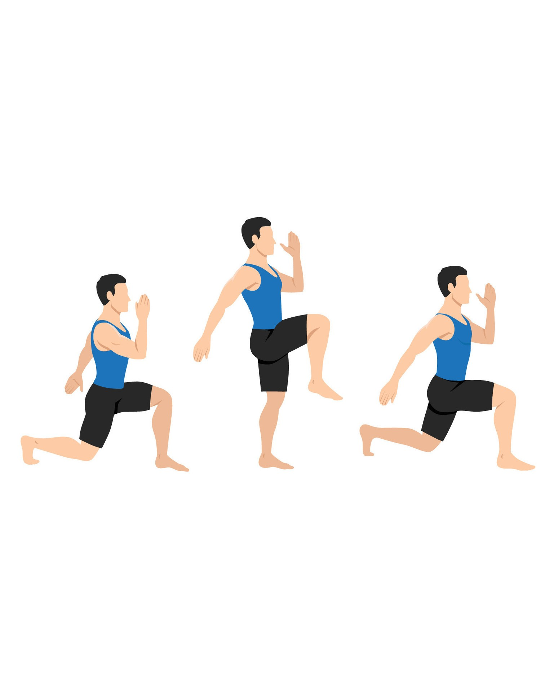

Exercise Description
Walking lunges target the legs and glutes. Step forward with one leg and lower your body until both knees are bent at 90 degrees. Push off your front foot to step forward with the other leg, continuing the movement.
Reps and Sets
Beginners: 3 sets of 10-12 reps per leg
Rest time between each set: 30secs
Video Implementation